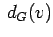
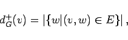
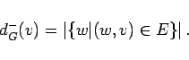

Inhalt Index DeskTop Bronstein

 Algebra und Diskrete Mathematik Algorithmen der Graphentheorie Grundbegriffe und Bezeichnungen
Algebra und Diskrete Mathematik Algorithmen der Graphentheorie Grundbegriffe und Bezeichnungen


Als Grad  eines Knotens v bezeichnet man die Anzahl der mit v inzidierenden Kanten. Schlingen werden doppelt gezählt. Knoten vom Grad 0 heißen isolierte Knoten.
Für jeden Knoten v eines gerichteten Graphen G unterscheidet man Ausgangsgrad dG+(v) und Eingangsgrad dG-(v):
|  | (5.340a) |
|  | (5.340b) |